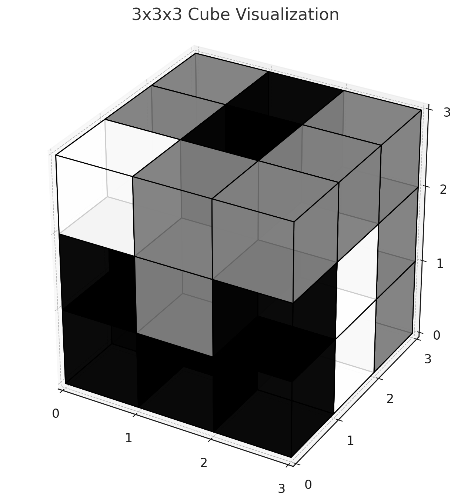

Digitalität im Unterricht
Lernen mit KI auf Augenhöhe!
Wolfgang Spahn
28.04.2025
Digitale Transformation
Geistige Tätigkeiten befindet sich in einem tiefgreifenden Wandel.


Was heisst das für uns, für die Schule, für den Unterricht?
Technische Zeichnungen
- Prompt: Bitte zeichne ein rechtwinkliges Dreieck, das in einem Kreis liegt, im Stil technisches Zeichnen. Zeichne den rechten Winkel ein.

- Prompt: Leo hat aus 27 kleinen, gleich grossen Würfeln einen grossen 3× 3× 3-Würfel gebaut. Die kleinen Würfel sind schwarz, grau oder weiss. Die Oberfläche des grossen Würfels ist jeweils zu einem Drittel schwarz, grau und weiss. Bitte hilf schon einmal bei der Visualisierung des Problems in matplotlib python.

Funktionenzeichnen mit KI
Bitte gib mir den Matplotlib code um die function y = x³-3x²-9x+27 zu zeichnen. Verwende das Canvas.
- Und nun beginnen wir einen Dialog über Nullstellen, Extrema, Wendepunkte, … .

Wir zeichnen ein Comic
Comic Zeichnen ist richtig aufwendig. ChatGPT kann uns dabei helfen. Die Story muss aber von uns kommen.
- Storyline: Die Geschichte in einem Satz.
- Storyboard: Wie sieht die Geschichte aus?
- Bildbeschreibung: Was ist auf den einzelnen Bildern zu sehen?
- Dialoge: Was sagen die Figuren?
- Zeichnungen: Zeichen die Bilder.
- Zusammenfügen: In einem Graphikprogram, füge die Bilder und Dialoge zusammen.

Schwierige Kreuzworträtsel
ChatGPT ist nicht wirklich gut in Kreuzworträtseln. Wir auch nicht. Gemeinsam schaffen wir es vielleicht.
Aufgabe

1 - Sammlungsaffiner Sehenswerturteiler
2 - Schmiegt sich, letztendlich damenhaft, an Wüstenregionen
3 - Passt zwischen Jung und Fahrt, auch wenn die gar nicht so weit geht
4 - Ungewöhnlich sichtbares Obst? Vergleichsweise Wohlgehüteter!
5 - Auf manch legerer <6 senkrecht: Feier> werden ihre Achtel in die Runde gegeben
6 - Wäre 2025 angemessen für Schweitzers 150. Oder Kehlmanns 50
7 - Tierische Ausgrenzung
8 - Sterben müssen bleibe mir <3 senkrecht: fern>, doch tot sein – das ist mir … (Epicharm)
9 - Der ganze Mai liegt in ihren Zeichen, Wörtern, Sätzen, Seiten
10 - Soziale Bewegungform
11 - Darin treffen sich die Größten der Großen zum Ballspielen, aber nur kurz
12 - Ende der Welt, mit dem Wolfgang Amadeus’ Vater mitunterschrieb
13 - Mahnmal der Verwundbarkeit